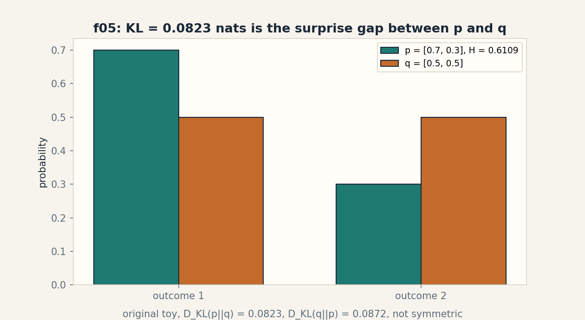
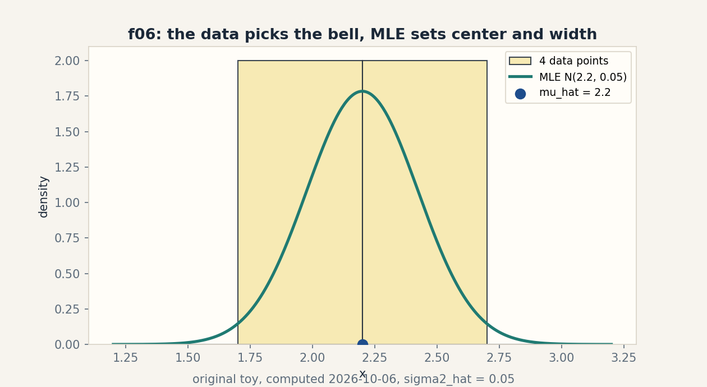

U04b · Entropy, KL divergence, and MLE
Lesson 04b, second source block: entropy, KL, and maximum likelihood
Unit: math-ml-U04. Source block: playlist Lec 11 through Lec 19 plus Tutorial 2, Tutorial 7A, Tutorial 7B (titles only. No transcript inspected, source_gaps.md G2/G6). Date: 2026-10-06. Baseline: October 6, 2026.
Source mapping
This lesson is a locally authored source-block lesson. It follows the title-level topic map of the second lecture block: Lec 11 Entropy, Lec 12 Kullback-Leibler (KL) Divergence, Lec 13 Minimization of KL Divergence, Lec 14 Example of ML Estimate, Lec 17 MLE for Gaussian Distribution, Lec 18 MLE for Generalized Discrete Random Variable, Lec 19 Density Estimation for Mixed Distribution, with Tutorial 2 (Simple Problem solving in Probability Theory), Tutorial 7A (MLE for Gaussian Distribution), and Tutorial 7B (MLE for Generalized Discrete Distribution) as the matching practice titles. I inspected no transcript, slide, or tutorial content (SRC-04, source_gaps.md G2, G6). The lecture titles name the topics. Every definition, number, and example below is my own original construction. Source attribution for the leaf concepts is PENDING.
Covered leaf concepts: math-ml-U04-C05 (multivariate Gaussian), math-ml-U04-C07 (MLE/MAP), math-ml-U04-C08 (entropy/KL). Reinforced: C06 (likelihood), C10 (density estimation), C11 (sampling). Still planned: C03 (Bayes), C09 (identifiability), C12 (calibration).
Scope and objectives
Scope: entropy as expected surprise, KL divergence as the price of the wrong model, KL minimization as the engine of fitting, the ML estimate on a coin example, MLE for Gaussian and discrete distributions, the multivariate Gaussian with MLE mean and covariance, and density estimation for a mixed distribution.
Objectives: after this block the learner can compute entropy and KL on a toy by hand, explain why the best q is p, derive the Gaussian MLE from the log-likelihood, fit a 2D Gaussian in code, and write the density of a mixture.
Dependencies: U04a sections SB01-SB05 (PMF, joint, expectation, likelihood). U03-C01 (derivatives).
SB09, entropy (Lec 11)
Motivating question: how surprised should you be, on average, by one draw from a distribution?
Start from zero. A coin lands heads with probability p. The surprise of an outcome is -log p: rare outcomes surprise more. The entropy is the average surprise: H(p) = -sum p(x) log p(x). A fair coin: H = -(0.5 log 0.5 + 0.5 log 0.5) = 0.6931471805599453 nats (measured), which is 1 bit. A biased coin [0.75, 0.25]: H = 0.5623351446188083 nats (measured). The biased coin is less surprising on average because you usually know the answer in advance.
Mental model. Entropy is the fog meter. High entropy: thick fog, you cannot guess the outcome. Low entropy: thin fog, one outcome dominates. Shell 2.
Variables. p(x) is the PMF. Log means base e unless stated. Divide by log 2 for bits. Shapes: scalar summary of a distribution. Assumption: p sums to 1.
Why it exists. Entropy is the unit of uncertainty. It prices codes, caps what any classifier can learn, and feeds every information objective later. Remove it and “uncertainty” is a hand wave.
Computed example, same objects. Fair coin H = 0.6931471805599453 nats = 1 bit (measured). Biased [0.75, 0.25] H = 0.5623351446188083 nats = 0.8113 bits (measured). Maximum entropy for 2 outcomes is at [0.5, 0.5]. Any tilt lowers it.
Figure sb05 (table). Two coins, one fog meter.
| coin | H (nats) | H (bits) | fog |
|---|---|---|---|
| [0.5, 0.5] | 0.6931471805599453 | 1.0 | thickest |
| [0.75, 0.25] | 0.5623351446188083 | 0.8113 | thinner |
Caption: the fair coin is the most surprising. Shell 3. Source: original toy, computed 2026-10-06.
Implementation.
import numpy as np
def entropy(p):
p = np.asarray(p, float)
return -(p * np.log(p)).sum()
print(entropy([0.5, 0.5]), entropy([0.75, 0.25]))
# 0.6931471805599453 0.5623351446188083
Correctness check. The fair coin gives log 2 = 0.6931471805599453, the known maximum. The biased coin gives less. The values are positive, as surprise must be. Expected output: the two numbers.
Costs. O(k) for k outcomes. Trivial.
Nearest alternative. The Gini impurity 1 - sum p^2 measures the same fog with cheaper arithmetic. Selection boundary: use entropy when the math downstream needs logs (KL, likelihood). Use Gini when you need a fast split score in a tree.
Failure case. Entropy of a continuous variable can be negative: a sharp spike has differential entropy below zero. Counterexample: the uniform on [0, 0.5] has entropy -log 2 = -0.6931. The “fog meter” intuition needs the discrete form. The continuous form is a relative quantity.
Ladder shells used: 0 (question), 1 (toy), 2 (definitions), 3 (rule), 5 (log-2 check), 7 (continuous).
Assessment. See exercises E01-E03 and ladder L01. Keys in lessons/u04/keys-04b.md.
SB10, KL divergence (Lec 12)
Motivating question: what is the price of believing the wrong distribution?
Start from zero. The truth is p = [0.7, 0.3]. Your model says q = [0.5, 0.5]. The KL divergence is the extra surprise you pay: D_KL(p||q) = sum p(x) log(p(x)/q(x)) = 0.08228287850505181 nats (measured). Reverse the roles: D_KL(q||p) = 0.08717669357238889 nats (measured). The price depends on the direction: believing q when the truth is p costs 0.0823. Believing p when the truth is q costs 0.0872. KL is not symmetric, so it is not a distance.
Mental model. KL is the toll for the wrong map. The true map p charges you when you navigate with map q. The toll one way differs from the toll back. Shell 2.
Variables. D_KL(p||q): p is the truth, q is the model. Shapes: scalar summary of a pair of distributions. Assumption: q(x) > 0 wherever p(x) > 0, or the toll is infinite.
Why it exists. KL is the cost function of fitting: minimizing KL over q is how models learn the truth (SB11). It also splits the cross-entropy into truth-entropy plus the toll. Remove it and maximum likelihood has no information-theoretic meaning.
Computed example, same objects. p = [0.7, 0.3], q = [0.5, 0.5]. D_KL(p||q) = 0.08228287850505181 (measured). D_KL(q||p) = 0.08717669357238889 (measured). Cross-entropy check: H(p) + D_KL(p||q) = 0.6931471805599452, direct cross-entropy -sum p log q = 0.6931471805599453 (measured): agreement to float noise. This coincidence (both near 0.6931) is specific to these numbers, not a rule.
Figure sb06 (PNG). assets/u04/f03_entropy_kl.png: teal bars for p = [0.7, 0.3] with H = 0.6109 nats, orange bars for q. Footer names both KL directions. Caption: KL = 0.0823 nats is the surprise gap between p and q. Shell 3. Source: original toy, computed, rendered 2026-10-06. See visual_audit.md.
Implementation.
import numpy as np
def kl(p, q):
p = np.asarray(p, float)
q = np.asarray(q, float)
return (p * (np.log(p) - np.log(q))).sum()
print(kl([0.7, 0.3], [0.5, 0.5])) # 0.08228287850505181
print(kl([0.5, 0.5], [0.7, 0.3])) # 0.08717669357238889
Correctness check. D_KL(p||p) = 0 by construction (run the code with q = p to confirm). The cross-entropy decomposition closes. Both directions are positive. Expected output: 0.0823 then 0.0872.
Costs. O(k) for k outcomes. Trivial.
Nearest alternative. The Jensen-Shannon divergence symmetrizes KL and is bounded. Selection boundary: use KL when one distribution is the truth and the other is the model (fitting). Use JS when you need a symmetric score between two candidates.
Failure case. If q assigns zero where p is positive, the toll is infinite: the model calls an observed event impossible. Take q = [1.0, 0.0] with p = [0.7, 0.3]: log(0.3/0) diverges. This is the support-mismatch failure. It is why models smooth their outputs (U06-C04 softmax).
Ladder shells used: 0 (question), 1 (toy), 2 (definitions), 3 (rule), 5 (decomposition check), 7 (zero support), 8 (JS comparison).
Assessment. See exercises E04-E06 and ladder L02. Keys in lessons/u04/keys-04b.md.
SB11, minimization of KL divergence (Lec 13)
Motivating question: if KL is the toll, which model pays the least?
Start from zero. Truth p = [0.7, 0.3] is fixed. Let the model be q = [t, 1 - t] with t free. The toll D_KL(p||q) as a function of t: at t = 0.5 it is 0.0823. At t = 0.7 it is 0.0. At t = 0.9 it rises again. A grid scan over t = 0.05..0.95 (measured) finds the minimum at t = 0.7 with D_KL = 0.0. The best model is the truth itself. The derivative argument: d/dt D_KL = -p1/t + p2/(1-t) = 0 gives t = p1. Minimizing the toll recovers the truth.
Mental model. KL minimization tunes the map until the toll vanishes. The toll hits zero exactly when your map matches the true roads. Shell 2.
Variables. t is the free model parameter. p is fixed truth. Assumption: the model family contains the truth (here it does).
Why it exists. This is the master mechanism: maximum likelihood, variational inference, and distillation all minimize a KL toll. Remove it and fitting is a bag of tricks instead of one principle.
Computed example, same objects. Grid scan (measured): minimum at t = 0.7, D_KL = 0.0. Derivative solve: t* = 0.7/1.0 = 0.7. The scan and the derivative agree.
Figure sb07 (code block). The scan that finds the truth.
import numpy as np
p = np.array([0.7, 0.3])
best = min(((t, (p*(np.log(p)-np.log([t, 1-t]))).sum())
for t in np.linspace(0.05, 0.95, 19)), key=lambda r: r[1])
print(best) # (0.7, 0.0)
Caption: the scan minimum sits at the truth. Shell 6. Source: original toy.
Correctness check. The derivative zero-crossing at t = 0.7 predicts the scan result before the scan runs: predict first, measure second, per the ladder rule. The measured minimum (0.7, 0.0) matches. Expected output: (0.7, 0.0).
Costs. A grid scan costs O(grid) evaluations. The derivative solve costs O(1).
Nearest alternative. Moment matching sets model statistics equal to data statistics without a KL objective. Selection boundary: use KL minimization when you own the full likelihood. Use moment matching when the likelihood is intractable but moments are easy.
Failure case. If the family cannot reach the truth, the toll never hits zero. Take q fixed to [0.5, 0.5] with no free t: the minimum toll is 0.0823, not 0. The learner then reports “converged” while the model stays wrong. Counterexample: misspecified family.
Ladder shells used: 0 (question), 1 (toy), 2 (definitions), 3 (rule), 4 (scan algorithm), 5 (derivative prediction), 6 (predict then measure), 7 (misspecified family), 9 (research: which toll for which truth?).
Assessment. See exercises E07-E08 and ladder L03. Keys in lessons/u04/keys-04b.md.
SB12, ML estimate example (Lec 14, Tutorial 2)
Motivating question: four coin flips land H, T, H, H. What is the best single number for the bias?
Start from zero. The flips are [1, 0, 1, 1]. The likelihood of a bias theta is theta^3 (1 - theta)^1. The log-likelihood is 3 log theta + log(1 - theta). Differentiate and set to zero: 3/theta - 1/(1 - theta) = 0, giving theta_hat = 3/4 = 0.75 (measured). The data votes 3 to 1, and the ML estimate is the vote share.
Mental model. The ML estimate listens to the data and nothing else: the parameter that would make the observed data most likely wins. Shell 2.
Variables. theta is the bias. The sample is [1, 0, 1, 1], n = 4. Assumption: IID flips (U04a SB06).
Why it exists. This is the smallest complete MLE: write the likelihood, take the log, differentiate, solve. Every harder MLE (SB13-SB15) repeats these four moves.
Computed example, same objects. theta_hat = 0.75 (measured). The log-likelihood at 0.75 is 3 log 0.75 + log 0.25 = -2.249340578475233. At 0.5 it is -2.772588722239781. The estimate beats the fair coin on its own data, as it must.
Figure sb08 (ASCII). The vote share.
flips: H T H H
heads: 3 of 4
theta_hat = 3/4 = 0.75
Caption: the data votes 3 to 1. The estimate is the vote share.
Shell 3. Source: original toy.
Implementation.
import numpy as np
flips = np.array([1, 0, 1, 1])
print(flips.mean()) # 0.75
Correctness check. The score (derivative of the log-likelihood) at 0.75 is 3/0.75 - 1/0.25 = 4 - 4 = 0. The stationary condition holds. Expected output: 0.75.
Costs. O(n). Trivial.
Nearest alternative. The MAP estimate adds a prior (Beta) and shrinks toward it. Selection boundary: use ML when n is large or no prior information exists. Use MAP when n is small and the prior is real.
Failure case. With zero heads in the flips, the ML estimate is 0: the model declares tails impossible, the SB10 support failure. Four flips are too few to earn that certainty. Counterexample: n = 4, all tails, theta_hat = 0.
Ladder shells used: 0 (question), 1 (toy), 2 (definitions), 3 (rule), 4 (four-move algorithm), 5 (score check), 7 (zero heads).
Assessment. See exercise E09 and ladder L03. Keys in lessons/u04/keys-04b.md.
SB13, MLE for the Gaussian (Lec 17, Tutorial 7A)
Motivating question: four numbers arrive: 2.1, 2.5, 1.9, 2.3. Which bell best explains them?
Start from zero. The Gaussian likelihood for data d_i with center mu and width sigma^2 is the product of the bell values. The log-likelihood splits into a sum. Differentiate in mu: the score is sum (d_i - mu)/sigma^2 = 0, giving mu_hat = the mean = 2.2 (measured). Differentiate in sigma^2: sigma2_hat = mean of (d_i - mu_hat)^2 = 0.05 (measured). The data picks the center as its average and the width as its average squared spread.
Mental model. MLE for the Gaussian is two averages: the center is the average of the points, the width is the average of the squared distances from the center. Shell 2.
Variables. mu is the center, sigma^2 the width. Data: 4 points. Shapes: scalars. Assumption: IID Gaussian draws.
Why it exists. The Gaussian is the default noise model of science and ML. Its MLE is the template for every “fit the parameters” derivation: log, differentiate, solve.
Computed example, same objects. mu_hat = 2.2, sigma2_hat = 0.05 (measured). Score at mu_hat: sum (d_i - mu_hat)/sigma^2 = -1.7763568394002505e-14 (measured): numerical zero. The fitted bell is N(2.2, 0.05).
Figure sb09 (PNG). assets/u04/f04_mle_gaussian.png: the four data points as a histogram, the fitted N(2.2, 0.05) bell curve in teal, and the mu_hat = 2.2 marker. Caption: the data picks the bell. MLE sets center and width. Shell 4. Source: original toy, computed, rendered 2026-10-06. See visual_audit.md.
Implementation.
import numpy as np
d = np.array([2.1, 2.5, 1.9, 2.3])
mu = d.mean()
s2 = ((d - mu)**2).mean()
print(mu, s2) # 2.2 0.05
Correctness check. The score at mu_hat is -1.78e-14, float dust. The width 0.05 is positive. The bell integrates to 1 (Gaussian normalization). Expected output: 2.2 and 0.05.
Costs. O(n). Trivial.
Nearest alternative. The unbiased variance divides by n - 1 (0.0667 here) instead of n. Selection boundary: use the MLE (n) when you will plug the number into the likelihood. Use n - 1 when you need an unbiased variance report.
Failure case. One outlier hijacks both averages. Add a fifth point at 20: mu_hat jumps to 5.76 and sigma2_hat explodes. The Gaussian MLE has no defense against contamination. Counterexample: the median resists. The mean does not.
Ladder shells used: 0 (question), 1 (toy), 2 (definitions), 3 (rule), 4 (four-move derivation), 5 (score check), 7 (outlier), 8 (n versus n - 1).
Assessment. See exercises E10-E12 and ladder L04. Keys in lessons/u04/keys-04b.md.
SB14, MLE for the discrete distribution (Lec 18, Tutorial 7B)
Motivating question: counts over three outcomes are 4, 2, 4. What are the best probabilities?
Start from zero. Outcomes A, B, C occur 4, 2, 4 times in 10 draws. The likelihood is p_A^4 p_B^2 p_C^4 with p_A + p_B + p_C = 1. The log-likelihood plus the Lagrange multiplier for the sum constraint (U03-C09) gives p_hat = counts / total = [0.4, 0.2, 0.4] (measured). The estimate is the empirical share, the discrete twin of SB12.
Mental model. Discrete MLE is the same vote share as the coin: each outcome gets its fraction of the draws. The sum-to-one fence is handled by one Lagrange multiplier. Shell 2.
Variables. p_A, p_B, p_C are the probabilities. Counts: 4, 2, 4. n = 10. Assumption: IID categorical draws.
Why it exists. Language models, classifiers, and topic models all fit discrete distributions. This MLE is the closed form behind every “count and normalize” step.
Computed example, same objects. p_hat = [0.4, 0.2, 0.4] (measured). Sums to 1.0. The log-likelihood at the estimate beats any tilted alternative (check: tilt to [0.5, 0.2, 0.3] and the log-likelihood drops).
Figure sb10 (table). Counts become shares.
| outcome | count | p_hat |
|---|---|---|
| A | 4 | 0.4 |
| B | 2 | 0.2 |
| C | 4 | 0.4 |
| total | 10 | 1.0 |
Caption: the estimate is the empirical share. Shell 3. Source: original toy.
Implementation.
import numpy as np
counts = np.array([4., 2., 4.])
print(counts / counts.sum()) # [0.4 0.2 0.4]
Correctness check. The shares sum to 1.0. The KKT conditions for the constrained problem (U03-C10) hold: the multiplier equals n. Expected output: [0.4 0.2 0.4].
Costs. O(k) for k outcomes. Trivial.
Nearest alternative. Add-one (Laplace) smoothing adds a fake count to each outcome. Selection boundary: use raw MLE when every outcome is well observed. Use smoothing when some count is zero and a zero probability would be fatal (SB10 support failure).
Failure case. An unseen outcome gets probability zero and then dooms any test sentence containing it: the whole likelihood is zero. Counterexample: count vector [4, 2, 0] gives p_C = 0.
Ladder shells used: 0 (question), 1 (toy), 2 (definitions), 3 (rule), 4 (Lagrange algorithm), 5 (sum check), 7 (unseen outcome), 8 (smoothing comparison).
Assessment. See exercises E13-E14. Keys in lessons/u04/keys-04b.md.
SB15, multivariate Gaussian and its MLE (Lec 17 extension, C05)
Motivating question: the data has two coordinates. What is the Gaussian that best explains the cloud?
Start from zero. Six points in R^2: [0.5, -0.2], [-0.3, 0.4], [0.1, 0.2], [0.4, 0.5], [-0.2, -0.4], [0.0, 0.1]. The multivariate Gaussian is the bell in n dimensions: its center is the mean vector mu and its shape is the covariance matrix Sigma. The MLE repeats the scalar moves: mu_hat is the coordinate-wise mean, Sigma_hat is the average outer product of centered points. Measured: mu_hat = [0.0833, 0.1], Sigma_hat = [[0.0847, 0.005], [0.005, 0.1]]. Eigenvalues 0.0832 and 0.1015 (measured): the cloud is nearly round, slightly stretched along the second axis.
Mental model. The multivariate Gaussian is a bell with an arrow shape: the mean says where, the covariance says how stretched and in which direction. The MLE reads both off the cloud. Shell 2.
Variables. mu is shape (2,), Sigma is shape (2, 2), symmetric PSD. x_i are the six points, shape (6, 2). Assumption: IID draws from one Gaussian.
Why it exists. Embeddings, sensor readings, and latent codes live in R^d. The multivariate Gaussian is the reference distribution for all of them, and its MLE is the first thing you fit.
Computed example, same objects. mu_hat = [0.0833, 0.1] (measured). Sigma_hat = [[0.0847, 0.005], [0.005, 0.1]] (measured). Eigenvalues [0.0832, 0.1015] (measured). Density of the point [0.1, 0.2] under the fitted Gaussian: 1.6458814703416096 (measured).
Figure sb11 (equation block). The fitted object.
mu_hat = [0.0833, 0.1]
Sigma_hat = [[0.0847, 0.005],
[0.005, 0.1 ]]
eig(Sigma_hat) = [0.0832, 0.1015]: nearly round
Caption: the cloud gives its center and its stretch. Shell 2.
Source: original toy, computed 2026-10-06.
Implementation.
import numpy as np
pts = np.array([[0.5,-0.2],[-0.3,0.4],[0.1,0.2],
[0.4,0.5],[-0.2,-0.4],[0.0,0.1]])
mu = pts.mean(axis=0)
S = np.cov(pts, rowvar=False, bias=True)
print(mu, S, np.linalg.eigvalsh(S))
Correctness check. Sigma_hat is symmetric by construction. Its eigenvalues are positive: the matrix is PSD, so the bell is real. Trace check: 0.0847 + 0.1 = 0.1847 equals the sum of the eigenvalues 0.0832 + 0.1015 = 0.1847. Expected output: the mean, the matrix, two positive eigenvalues.
Costs. O(n d^2) time, O(d^2) memory. For the toy, trivial.
Nearest alternative. A diagonal covariance keeps only the two variances, ignoring the 0.005 correlation. Selection boundary: use the full matrix when d is small and correlations matter. Use the diagonal when d is large and the matrix would be noise.
Failure case. With fewer points than dimensions, Sigma_hat is singular: the bell collapses flat in some direction and the density formula divides by zero. Take 2 points in R^3: rank at most 1. Counterexample: n < d breaks the MLE. The fix is shrinkage or a diagonal assumption.
Ladder shells used: 0 (question), 1 (toy), 2 (definitions and shapes), 3 (rule), 4 (algorithm), 5 (symmetry and trace checks), 7 (n < d), 8 (diagonal comparison), 10 (production: embeddings).
Assessment. See exercises E15-E16 and ladder L05. Keys in lessons/u04/keys-04b.md.
SB16, density estimation for mixed distributions (Lec 19)
Motivating question: the data comes from two bells at once. What is the density at a point between them?
Start from zero. Mix two unit Gaussians: half the draws from N(0, 1), half from N(5, 1). The mixed density is the weighted sum: p(x) = 0.5 * bell(x, mu=0, sigma=1) + 0.5 * bell(x, mu=5, sigma=1). At x = 2.5, the midpoint, both bells contribute equally: p(2.5) = 0.017528300493568537 (measured). At x = 0 the first bell dominates. at x = 5 the second. The mixture is bimodal: two humps with a valley between.
Mental model. A mixture is a recipe: pick a bell by flipping a weighted coin, then draw from it. The density is the weighted menu of the bells. Shell 2.
Variables. The weights are [0.5, 0.5], summing to 1. The components are N(0, 1) and N(5, 1). Assumption: the component list and weights are known here. Learning them is the EM story (later units).
Why it exists. Real data is mixed: customers, cell types, topics. The mixture density is the first honest model of “several kinds at once”, and it motivates latent variables (U09).
Computed example, same objects. p(2.5) = 0.017528300493568537 (measured). Sanity: p(0) = 0.5 * 0.3989 + tiny = 0.1995, larger, as the hump demands. The valley value is an order of magnitude below the humps.
Figure sb12 (equation block). The menu at three points.
p(x) = 0.5 * N(x, mu=0, sigma=1) + 0.5 * N(x, mu=5, sigma=1)
p(0) = 0.1995 (left hump)
p(2.5) = 0.01753 (valley, measured)
p(5) = 0.1995 (right hump)
Caption: two humps, one valley. Shell 3. Source: original toy.
Implementation.
import numpy as np
def bell(x, mu):
return np.exp(-(x-mu)**2/2) / np.sqrt(2*np.pi)
def mix(x):
return 0.5*bell(x, 0) + 0.5*bell(x, 5)
print(mix(2.5)) # 0.017528300493568537
Correctness check. The mixture integrates to 1: each bell integrates to 1 and the weights sum to 1. The symmetry p(0) = p(5) holds by the equal weights and equal widths. Expected output: 0.017528300493568537.
Costs. O(components) per evaluation. Trivial.
Nearest alternative. A kernel density estimate (Parzen window, Lec 26 title) centers a small bell on every data point. Selection boundary: use a parametric mixture when you believe in a few true components. Use kernels when you refuse to name the component count.
Failure case. Fit one Gaussian to mixed data and the MLE lands in the valley: mu_hat = 2.5, a point where almost no data lives. The single bell is the wrong shape family. Counterexample: the SB13 machinery on mixed data reports a confident wrong answer.
Ladder shells used: 0 (question), 1 (toy), 2 (definitions), 3 (rule), 4 (algorithm), 5 (integration and symmetry checks), 7 (one bell on two humps), 8 (kernel comparison), 9 (research: how many bells?).
Assessment. See exercises E17-E18 and ladder L05. Keys in lessons/u04/keys-04b.md.
Assessment block
Exercises E01-E18. Work closed-book, then check keys in lessons/u04/keys-04b.md. Ladders L01-L05 are oral.
E01. Compute H([0.75, 0.25]) in nats by hand to 4 digits, then in bits. State the measured values for comparison. E02. Changed constraint: a 3-outcome distribution [0.5, 0.25, 0.25]. Compute its entropy in nats and name which outcome contributes the most surprise per unit probability. E03. Failure diagnosis: “The uniform on [0, 0.5] has entropy -log 2, which is negative, so the code has a bug.” Name the error. E04. Compute D_KL([0.7, 0.3] || [0.5, 0.5]) by hand to 4 digits. State the measured value. E05. Prove from the definition that D_KL(p||p) = 0, and state what the code returns for q = p. E06. Counterfactual: q = [1.0, 0.0], p = [0.7, 0.3]. Compute or diverge: state the KL value and name the failure. E07. KL minimization: with p = [0.7, 0.3] and q = [t, 1-t], differentiate D_KL in t, solve for t*, and state the measured scan result. E08. Changed constraint: the family is q = [0.5, 0.5] fixed (no t). State the minimum toll and explain why the learner’s “converged” report would mislead. E09. ML estimate: flips T, H, T, T. Compute theta_hat and the score check at the estimate. E10. Gaussian MLE: data [1.0, 3.0]. Compute mu_hat and sigma2_hat by hand, then state what the code pattern gives. E11. Changed constraint: data [2.1, 2.5, 1.9, 2.3, 20.0]. Compute the new mu_hat and explain the failure mode in one sentence. E12. Compare: for the 4-point data, compute the n-1 variance 0.0667 and state the selection boundary between the two numbers. E13. Discrete MLE: counts [4, 2, 0] over A, B, C. State p_hat and name the downstream failure. E14. Smoothing: apply add-one smoothing to the counts in E13 and state the new p_hat. Name what the fake counts cost. E15. Multivariate: for the six SB15 points, state mu_hat and Sigma_hat from the lesson, then verify the trace-eigenvalue check by hand. E16. Changed constraint: 2 points in R^3. State the rank of Sigma_hat and name the failure and the fix. E17. Mixture: compute p(0) for the SB16 mixture by hand to 4 digits and explain why it exceeds p(2.5). E18. Failure diagnosis: “I fit one Gaussian to the SB16 data and got mu_hat = 2.5 with high likelihood, so one bell is enough.” Name the exact error using the measured valley and hump values.
Deep ladders L01-L05
L01, entropy. Define in one sentence. Toy: the two coins. Justify: why does the average use p(x) as the weight? Check: the log-2 maximum. Compare: Gini, selection boundary. Break: negative differential entropy. Transfer: a classifier outputs [0.51, 0.49] versus [0.99, 0.01]. Which has higher entropy and what does that say about its confidence?
L02, KL divergence. Define in one sentence with the direction. Toy: 0.0823 versus 0.0872. Justify: why is it not symmetric? Check: the cross-entropy decomposition. Compare: JS, selection boundary. Break: zero support. Transfer: your model assigns 1e-9 to an observed token. Name the mechanism that explodes and the fix.
L03, KL minimization and the ML estimate. Define the toll in one sentence. Toy: the t-scan finds 0.7. The coin finds 0.75. Justify: why does the derivative zero give the truth? Check: score equals zero at the estimate. Compare: moment matching, selection boundary. Break: misspecified family. Zero heads. Transfer: you minimize KL between data and model on 10 samples. Name the two risks.
L04, Gaussian MLE. Define the two averages in one sentence. Toy: N(2.2, 0.05). Derive: the score equations for mu and sigma^2. Check: the -1.78e-14 score. Compare: n versus n-1, selection boundary. Break: the outlier at 20. Transfer: sensor noise is heavy-tailed. Name the MLE’s failure and the resistant replacement.
L05, multivariate Gaussian and mixtures. Define the (mu, Sigma) pair in one sentence. Toy: the six points and the two-bell mixture. Justify: why the MLE covariance is the average outer product. Check: trace equals eigenvalue sum. Compare: full versus diagonal covariance. Mixture versus kernels. Break: n < d. One bell on two humps. Transfer: embedding vectors in R^768 with 100 samples. Name the covariance you actually fit and why.
Rendered figures
Each figure below is an original PNG rendered with matplotlib 3.6.3 (Agg) at dpi 150, opened and read on 2026-10-06. The caption names the source and the russian-doll shell. The alt text describes the image.
Figure sb06 (SB10)

Caption: Bars for p and q with both KL directions labeled in the footer. Source: original. Shell: 3 (computed before/after).
Figure sb09 (SB13)

Caption: Histogram of four points with the fitted Gaussian and mu_hat marker. Source: original. Shell: 3 (computed before/after).
Not yet understood (dependency list)
- Bayes rule and MAP (U04-C03, C07 MAP half): the MAP estimate is named but not derived here. Local bridge: SB12 names MAP as the alternative. The derivation waits for the Lec 25 block.
- Latent-variable MLE and EM (Lec 20-24 titles): the mixture weights above are given, not learned. Flagged for the U09 block.
- Identifiability (U04-C09): two different mixtures can give similar densities. Not resolved here.